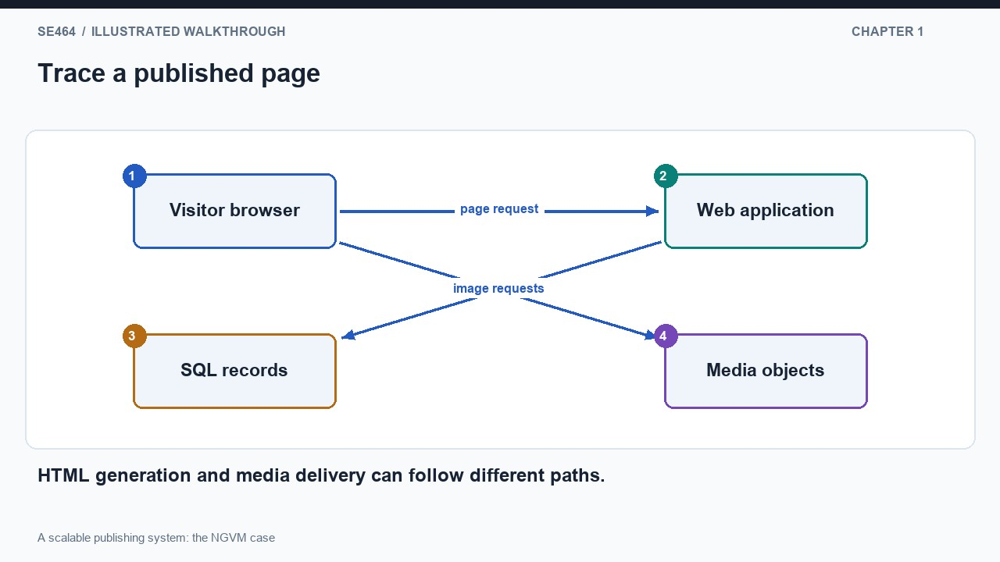
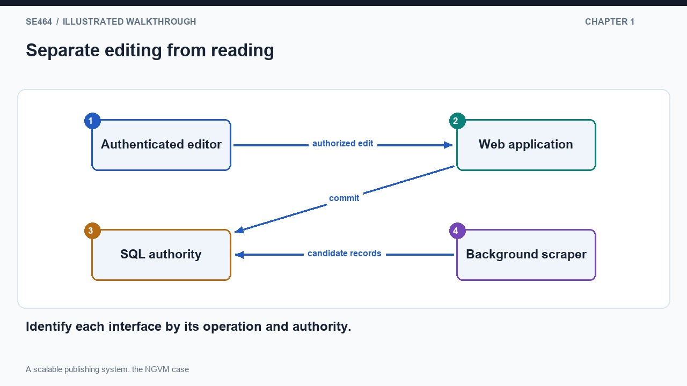
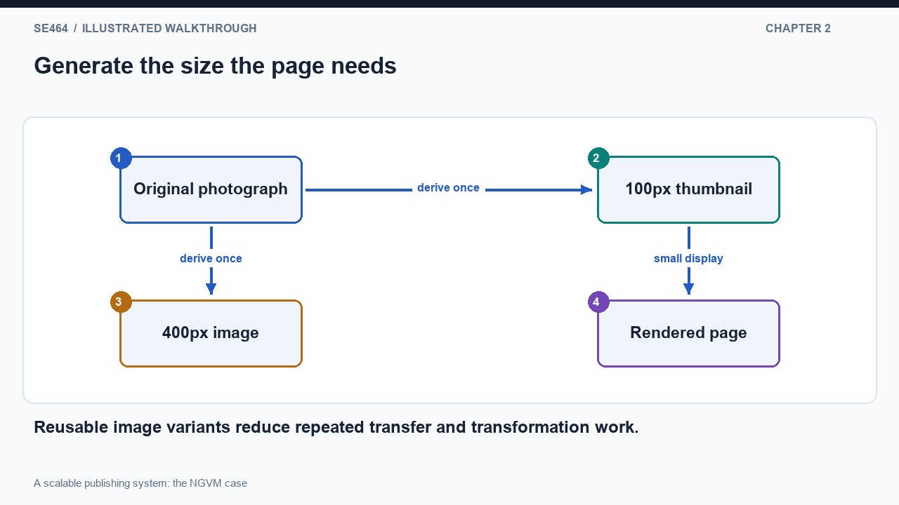
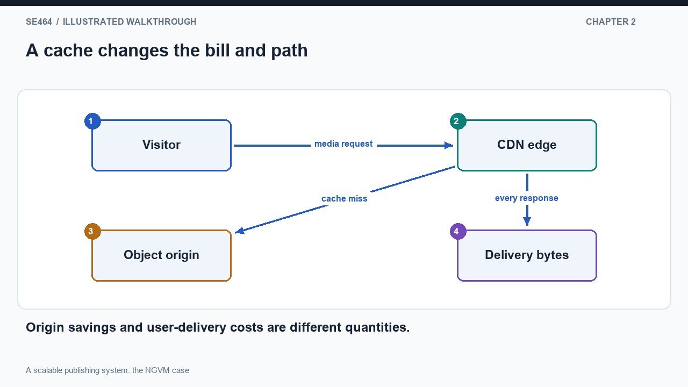
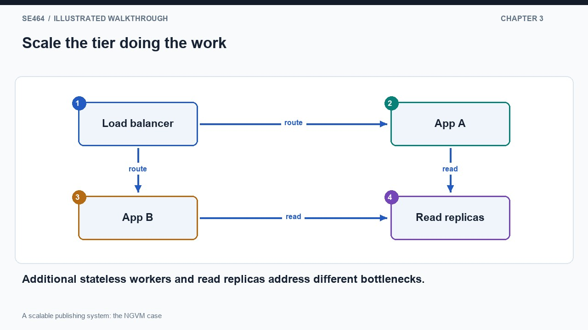
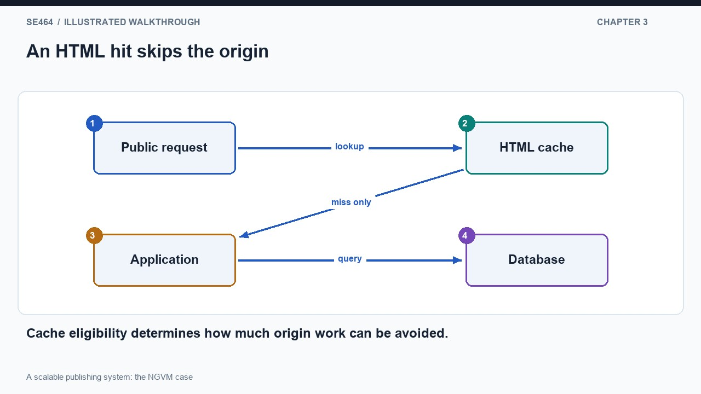
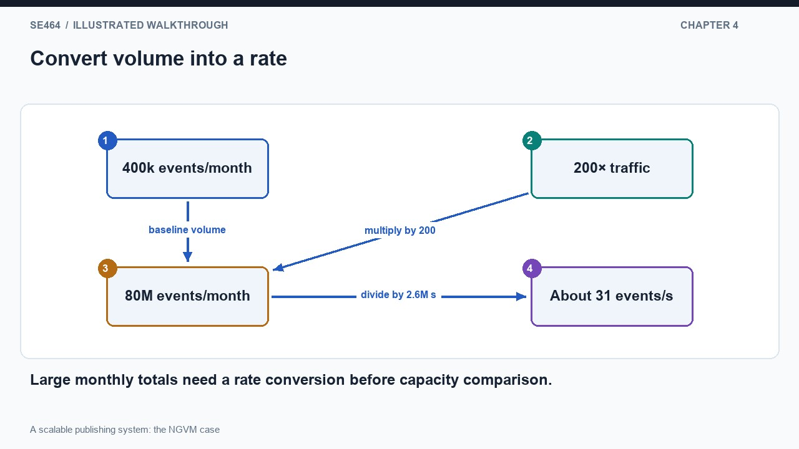
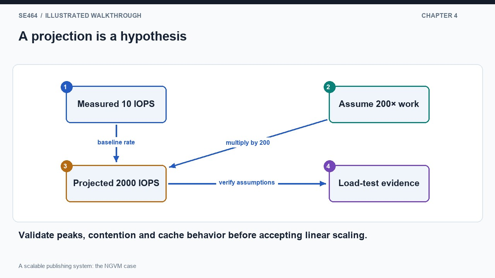

Evaluate a historical publishing-system design through caching, storage, cost and scaling tradeoffs.
Read the publishing architecture by following one request rather than counting boxes. A visitor asks for a memorial page. The web application queries structured records in a relational database and returns HTML containing links to photographs. The browser then requests those media objects separately, potentially through a content-delivery network. A background scraper gathers candidate information for later use, while administrative users edit content through authenticated endpoints. These are different paths with different timing and trust requirements. The application can remain a stateless monolith even though it uses several external services: architectural scalability does not require splitting every function into an independently deployed microservice at the beginning.
Now follow an administrative change. The request must identify the user and check authorization before modifying records. The database owns structured facts such as page details, photo relationships, comments and edit history. The media store owns image bytes. A background task and a public read can therefore touch different components without all work passing through the same synchronous chain. Draw public reads and administrative writes as distinct arrows into the application, then identify which data each operation accesses. This makes the interfaces meaningful. A label such as database says little until we know whether an arrow performs a lookup, commits a change or transfers a large object.
The case is useful because it connects an understandable product to deployable components. A relational schema can express page-to-photo relationships and editor activity, while object storage serves media without treating each image as a relational query result. External email or payment services should appear as dependencies only where their role affects a workflow. Component boundaries also define failure behavior: a media-delivery problem need not prevent reading the text of an already published page, whereas an unavailable authoritative database can block edits. For each arrow, ask what the caller sends, what the callee promises, whether the call must finish before the user receives a response, and what happens if it fails. Those answers turn the diagram into an architecture explanation rather than a catalog of technology names.


No. HTTP semantics and naming do not replace authentication or authorization checks.
Photographs are stored as objects, with derived sizes for different uses. A page showing a small thumbnail should not force every visitor to download the original full-size image. Generating reusable variants trades some processing and storage for lower repeated transfer cost and faster display. The application can return a media URL while the browser fetches the bytes directly from the delivery path. This separates the cost of constructing a page from the cost of transferring its images. The diagram should show one source image producing several named variants, then a page choosing the size it actually displays. This is a concrete example of moving repeated work out of the request path.
A content-delivery network places reusable media nearer users and reduces repeated requests to the origin. It is not free, and a high hit rate does not mean there is no delivery bill: bytes still travel from the cache to visitors. The case's historical cost breakdown shows why architecture discussions need measurements of both demand and spending. Compute instances, database capacity, object storage, requests and data transfer are separate cost drivers. A fast media path can dominate cost even when application servers are small. Treat the historical dollar amounts as evidence about that particular workload and time, not as current prices or a universal budget for another publishing system.
Cacheability comes from content semantics. Immutable image versions can be reused for a long period, while replacing bytes at the same URL needs an explicit freshness policy. A new versioned URL can make updates predictable, although references and abandoned versions still require lifecycle management. Public content and administrative responses also need different caching rules; a shared cache must not accidentally reuse private editor information. To evaluate a change, estimate requests, bytes per response, cache hit ratio and origin work avoided. Then inspect whether the extra storage, transformation and delivery costs justify the latency improvement. The lesson is that media delivery is an architectural subsystem with its own workload, rather than a decorative attachment to the page-generating application.


No. Anyone with a publicly accessible URL may retrieve it; access permissions determine authorization.
Scale the publishing system by asking which resource is doing repeated work. If most requests read public pages, the database may first benefit from more memory, better queries and additional read replicas. A read replica serves another copy of the records, while edits still go through the primary. If page construction becomes the bottleneck, add stateless application instances behind a load balancer. Those instances can share the same authoritative storage because they do not require local per-user state to answer the next request. The progression keeps each change connected to a measured limit. Adding machines to a tier that is not limiting throughput will not solve a bottleneck elsewhere.
The next step can avoid application work altogether for eligible requests. Put a response cache in front of public HTML pages and keep media delivery cached as well. Anonymous visitors requesting the same page can reuse the same response, provided the freshness policy permits it. The architecture now has two filters on origin demand: media hits bypass object-origin retrieval, and HTML hits bypass page construction and its database queries. Follow a cache hit and a miss as separate paths. A hit is short; a miss still uses the complete origin path. The origin must therefore tolerate miss bursts, cache eviction and recovery instead of assuming that the average hit rate will always protect it.
This design works particularly well because the workload permits shared responses. Public readers do not require a personalized recommendation model, and many visible changes can tolerate a short propagation delay. If every response became unique or had to reflect a just-completed write immediately, the same cache arrangement would provide less benefit. Keep edit confirmation and other freshness-sensitive operations on appropriate paths rather than weakening their behavior to improve a headline hit rate. Evaluate tail latency, cache-key correctness and invalidation as part of the scaling change. A stateless monolith, shared cache and relational primary with replicas can support a substantial read-heavy workload; the architecture should become more complicated only when the requirements or measurements justify the additional coordination.


No. The limiting shared resource remains; measure demand and address that constraint.
A large monthly total can sound more demanding than its rate actually is. The case projects roughly four hundred thousand monthly write-generating events at two hundred times the traffic: eighty million events per month. Dividing by approximately 2.6 million seconds gives about thirty-one events per second on average. This calculation does not prove that the system can handle the workload, but it challenges the assumption that a large audience automatically requires sharded writes. The diagram should show the conversion from events per month to events per second. Always attach the unit to a number; comparing a monthly event count directly with a per-second device capacity is meaningless.
Next compare the projection with measurements. If a current workload uses about ten storage operations per second, a simple two-hundred-fold projection suggests about two thousand, subject to the assumption that operations grow proportionally. CPU observations provide another estimate, but multiplying core count by current spare capacity is only a rough bound. Lock contention, serial work, memory pressure and changed cache behavior can break linear extrapolation. Likewise, one application event is not necessarily one database write or one storage operation. The purpose of the estimate is to identify plausible capacity and the next experiment, not to replace a load test with arithmetic that ignores the execution path.
Explain why this case is unusually favorable. Much of the traffic is reading public, reusable content; the number of published pages does not increase merely because more visitors arrive; and visitor interactions do not require immediate person-to-person delivery. More repeated visits can even improve cache reuse, so origin load need not grow exactly with audience size. Peak bursts, skew toward popular pages and failure recovery still matter. A defensible claim combines a workload model, current measurements, explicit scaling assumptions and a test at the expected peak with headroom. If requirements change to personalized feeds or strongly coordinated interactions, repeat the analysis instead of transferring the old conclusion. Architecture evidence belongs to the workload that produced it.


No. Peak rate, per-write work, indexes, consistency, durability and competing reads also matter.
The same representation can serve many users, subject to freshness and correct cache keys.
About 30.77 events/s on average; it says nothing by itself about peaks or physical database I/O.
Yes. Multiple application instances can share authoritative state and serve requests without requiring microservice decomposition.
Design the read and write paths for a 200-fold increase. State what can be cached and how a volunteer sees a just-completed edit.
Public shared pages and media can use CDN caches; authenticated administration bypasses shared caches. Stateless app instances use load balancing. Eligible stale-tolerant reads use replicas, while immediate read-after-write uses an appropriate primary/consistency path. Invalidate or version edited cache entries and test peak workload before sizing.
Questions-only worksheet · Worked answer sheet
A publishing site scales its stateless application from one instance to four behind a load balancer. Each instance also starts the same hourly import timer. After rollout, the editor finds four copies of every imported story. Readers are distributed correctly, and session state is externalized. The import must run once per scheduled interval, but failed work must be recoverable. Which change most directly addresses the defect?
Best answer: B.
Separate scheduling from the replicated request-serving instances and represent each import interval as a uniquely identified durable job. Let a worker claim it with an appropriate coordination mechanism, and make story insertion idempotent using the source’s stable identifier. A lease or scheduler alone is not enough because a crash can occur after insertion but before completion is recorded. The other application instances can remain behind the load balancer. This preserves recoverability without allowing replicated timers to multiply authoritative content.
Stateless request handling does not make background side effects unique. Scheduling ownership and repeat-safe work require explicit design.
A public exhibit page is requested 3,600 times per second during a campaign. Its CDN serves 92% of requests without contacting the origin. For the remainder, an application cache serves 75% without a database query; each application-cache miss issues two database reads. Assume the hit rates are independent and stable. Compute origin requests and database reads per second, then explain what capacity test is missing before trusting this steady-state estimate.
The CDN miss rate is 8%, so the origin receives 3,600 × 0.08 = 288 requests per second. One quarter of those miss the application cache: 288 × 0.25 = 72. At two reads each, the database receives 144 reads per second. Test cold-start and synchronized-expiry behavior: if both caches are empty, the same demand could create 7,200 reads per second. Staggered expiry, request coalescing and controlled warming can reduce the surge, but their effectiveness and failure behavior need measurement.
Multiplying steady-state hit rates gives a useful average. It can conceal a much larger origin surge when cache misses are correlated.
An editor removes a public photograph after a consent complaint. The database now marks it withdrawn, but the old object URL remains public and the CDN retains it for twenty-four hours. The site has generated three thumbnail sizes with different URLs. Design a withdrawal procedure that handles these copies and explain the limitation of promising that all previously downloaded copies disappear. Do not assume deleting a database row revokes object access.
Record withdrawal authoritatively, stop rendering new links, restrict or remove the original and each thumbnail at the object layer, and request CDN invalidation for their cache keys. Track invalidation results and retry failures; ensure the rendering and image-generation pipeline does not recreate withdrawn representations. Where stronger future-access control is required, use an authorization-aware delivery design with appropriately short-lived credentials and cache policy. These actions reduce future delivery from controlled systems, but cannot erase copies already downloaded or retained by external recipients.
Content ownership spans metadata, objects and delivery caches. Revocation must reach each controlled representation and be stated with realistic boundaries.